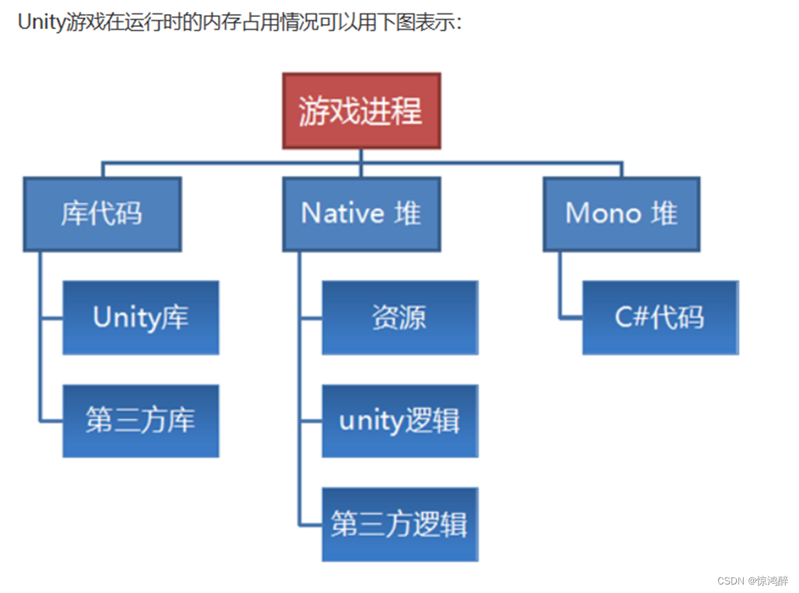

内存优化
内存通道
一个运行中的Unity应用进程，其占用的所有系统内存通常可以划分为以下三个主要部分：
来适应你所需要的内存，并且定时的使用垃圾回收来释放不需要的内存。所以有些情况没有触发GC，但是又有许多不需要使用的内存的引用，需要手动释放。

本机堆的内存优化
本机内存主要被 资源 占用。因此，优化重心在于管理好这些资源的大小、加载和卸载。
1. 纹理优化
- 压缩格式：Android使用 ASTC, iOS使用 ASTC 或 PVRTC, PC使用 DXT 系列。
- MaxSize：根据平台不同，MaxSize设置该平台最小值
- Mip Map：仅对3D场景中需要远景显示的纹理开启。例如UI元素这类相对于相机Z轴值不会变化的纹理，关闭该选项
- alpha:对于不透明纹理，关闭其alpha通道
- 合批
2. 网格优化
- LOD
- Mesh Compression
3. 使用AB包
- Resource文件夹里的内容被打进包的时候会做一个红黑树 (R-B Tree) 用做索引，即检索资源到底在什么位置。所以Resource越大，红黑树越大，它不可卸载，
并在刚刚加载游戏的时候就会被一直加在内存里，极大的拖慢游戏的启动时间，因为红黑树没有分析和加载完，游戏是不会启动的，并造成持续的内存压力。所以建议不要使用Resource，使用AssetBundle。
托管堆的内存优化
托管堆的优化就是减少GC
- 字符串操作 ：string是不可变的，所以每次进行拼接都会创建新的字符串，会产生GC。可以用StringBuilder
- 装箱Boxing：将值类型转为object或引用类型时会发生装箱，导致内存分配
- LINQ 和匿名方法 ： LINQ方法返回的是迭代器对象，这些对象在堆上分配。且每个LINQ操作都会创建委托实例。 匿名方法捕获外部变量时，会创建闭包，且lamda表达式会创建新的委托实例。
- 实例化GameObject和Component ： Instantiate 和 Destroy本身会产生GC，但主要来自于引擎端，可以使用对象池复用对用。
- DeBug.Log ： 将值类型转为object或引用类型时会发生装箱，导致内存分配